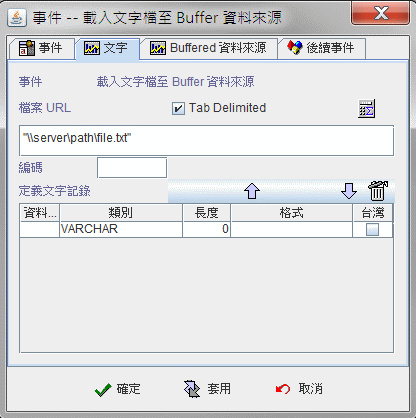
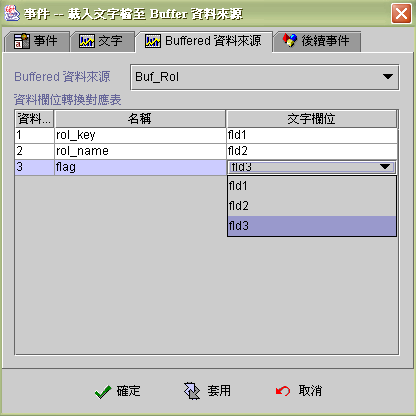

|

載入文字檔到 Buffer 資料來源 (load text file to buffered data source)
事件執行狀態與訊息 (event runtime status and message)
載入文字檔到 Buffer 資料來源
。jLIVE Builder™ 目前提供載入固定長度 (fixed length) 和 Tab
分隔 (Tab delimited) 的文字檔資料，文字檔資料 (text file)
可以存在於客戶端 (client) 或 jLIVE™ middle ware
所存在的區域網路內的任何本機。
-
文字
-
檔案 URL (file URL)： 文字檔案的路徑。
-
Tab Delimited ： 核取 (checked) 為使用 Tab
符號做為欄位分隔的文字檔，不核取 (unchecked) 為使用固定長度
(Fixed length) 的文字檔。
-
編碼 (charset)：
文件所使用的編碼字集。
-
定義文字記錄 (define text record)：
定義文字檔的欄位格式。
使用固定長度 (fixed length)
的文字檔，需正確的定義每個欄位的 BYTE
數，包括每筆記錄的最後是否有附加換行字元 (0D0A) (carriage
return and line feed)，如果有附加換行字元 (0D0A)
，設計師須定義一個長度為 2 (0D0A) 的欄位 (fld) ，當作解析
(parser) 換行字元 (0D0A) 欄位，系統才能正確的分割每筆記錄。
使用Tab 分隔(Tab delimited)
的文字檔，長度屬性系統將會忽略，可不設定。
-
向上
： 將標示欄位移向上。
-
向下
 ：
將標示欄位移向下。 ：
將標示欄位移向下。
-
刪除
：
刪除資料欄位定義。
-
資料欄位 (field)： 文字資料的暫時欄位名稱，從 fld1依序排列。
-
類別 (type)： 資料型態，有VARCHAR、INTEGER、FLOAT、DATE、TIME、TIMESTAMP。
-
長度 (length)： 文字欄位資料長度，以
Byte 數計量 。
-
格式 (format)：
當文字欄位資料為日期時間，須指明其日期時間的格式，系統會依格式自動解析
(parser)。例如：文字欄位資料為"2001-12-31
14:29:51"，選擇 TIMESTAMP
類別，定義格式為："yyyy-MM-dd hh:mm:ss"， 系統讀入至
Buffer 資料來源的值為"20011231142951"。
-
台灣 (Taiwan)：
當資料型態選擇 DATE 或者 TIMESTAMP時，這個選項才致能
(enable)，當文字資料檔所含的日期資料是中華民國年，須核取此選項，系統解析時會自動將中華民國年，轉成西元年份。例如："901231" 轉成 "20011231"。


▲Top
事件執行狀態與訊息 (event runtime status and message)
EvStatus("事件名稱") ：取得事件執行狀態。
|
回傳值 |
狀態 |
| 空字串 |
事件未被引發。 |
| -1 |
事件啟動後，依條件判斷後執行否則事件。 |
| 1 |
事件啟動後，執行成功。 |
| 0 |
事件啟動後，執行過程有誤。 |
EvStatus("事件名稱.error") ：取得事件執行錯誤代碼。
|
回傳值 |
說明 |
| 空字串 或 0 |
沒有錯誤訊息或無法取得錯誤訊息。 |
| 1 |
文字檔檔案名稱錯誤。 |
| 2 |
資料來源名稱錯誤。 |
| 3 |
文字檔檔案載入錯誤。 |
| 4 |
不支援指定的編碼 (unsupported encoding )。 |
EvStatus("事件名稱.INFO_STRING") ：取得事件執行
INFO_STRING 的訊息。
|
INFO_STRING |
回傳值 |
說明 |
|
name |
檔案名稱 |
文字檔檔案名稱。 |
|
name2 |
資料來源名稱 |
Buffer 資料來源名稱。 |
|
count |
資料記錄筆數 |
寫入Buffer 資料來源筆數。 |
▲Top
Copyright © 2001~
2004 Probe Technology Inc. . All Rights Reserved.
Questions, comments,
and suggestions to Service@probe.com.tw
|